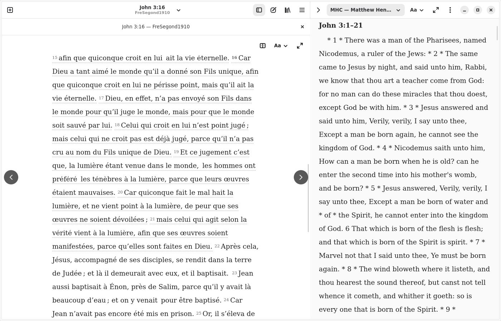

Read offline
Choose and download a translation from the library. Keep reading without an internet connection.
A quiet place to read. Space to explore, compare and keep your own notes.
Install BibleLinux x86_64 · Flatpak · Free and open source
An early release. Expect rough edges and help us improve it.
Interface available in English and French.

Choose and download a translation from the library. Keep reading without an internet connection.
Keep passages open in tabs, compare translations and consult downloaded commentaries.
Coverage and reference mapping depend on each resource. Missing entries are identified.
Adjust the reading appearance and keep personal notes connected to passages.
Open the installation file with GNOME Software or your Flatpak installer. Then update through Software, or run flatpak update. Automatic updates depend on your desktop settings.
Bible uses its own signed alpha channel. The GNOME runtime comes from Flathub. No Bible translation is bundled: download resources you are entitled to use.
Coming from an older standalone bundle? Read the migration and installation help before replacing it. Keep your existing notes and resources.
Current build: 8029cf3e887d · revision 39665876529-2.
Corresponding source archive · GPL-2.0-only license · Third-party notices
Downloaded resources and dependencies retain their own licenses.
Add the alpha repository manually · Signing public key · Full build provenance · Fallback bundles
The installation may be system-wide or per-user. Use the matching scope when troubleshooting; see detailed channel instructions.